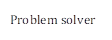
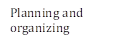
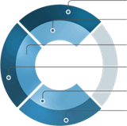

|
NAME AUTOMATION TEST ENGINEER
|
|
|||||||||||||
|
PROFILE SUMMARY
Software Tester with 4.3 years of total experience in Banking and Insurance domain and with 3 years of Automation Testing exposure. Experience in ETL Testing in Banking Datawarehouse project. Good knowledge of SQL, Unix and ETL concepts. Extensive experience in Agile Framework - Automating E2E and GIT test suits with various standalone, client-server enterprise applications using Selenium Python – Behave BDD framework. Knowledge and hands-on of Selenium with Python (Behave framework), Regression and sanity testing. Knowledge of Jenkins in Selenium and Jmeter tool to do the Performance testing. Tracking the bugs and Defect reporting using Test Management tools like Jira and HP ALM. Well versed with Test Documentation (Test Scenario, Test Case, Test Data, Defect Report). Have implemented Power Apps and Workflows for work efficiency.
Python Programming Database Technologies ETL tools –Informatica, Control M
Selenium using Python SQL Agile Methodologies
|
||||||||||||||
|
SOFT SKILLS
 |
EDUCATION
|
|||||||||||||
|
TECHNICAL SKILLS
|
||||||||||||||
WORK EXPERIENCE
Banking Project Duration: May 2023 - Present
Project Description:
Datawarehouse project where from difference source the data was extracted , transformed and loaded to the destination database (SF). Based on the Star schema the transformation of data happened, specific overlays performed to transfer the data to IAG database by running the Control-M scheduler and data processing done by ETL tool. After each feed load in specific environment using the automated process reports generated to verify with the end-user.
Technologies Used: Python, SQL, Oracle SQL Database, Informatica, JIRA, Git, Shell Script
Roles & Responsibilities:
• Worked on feed onboarding activities involving Unix, Hive, Informatica and oracle database.
• Worked on Application specific deployments and environment preparations for SIT and UAT environment including database space optimization, data backup etc.
• Automated the redundant process by using Python and shell script.
• Experience in Test Data management and data extraction from various sources and efficiently loaded it into SF and IAG areas using scheduler tool Control-M.
• Experience in working with Informatica tool for data processing and extraction.
• Involved in defect identification and resolution for each release, delivering high-quality testing deliverables on time across SIT and UAT environments.
• Gained experience in SQL queries preparation and execution for backend testing and database validation, ensuring accuracy by comparing results with target tables using SQL Developer. Collaborated effectively with cross-functional teams to resolve feed loading issues during release.
Banking and Insurance project Duration: Nov 2020 to Feb 2023
Project Description:
Banking and Insurance project where the user prepared the quotes and policies based on the insurance they needed. Project UI webpage was developed based on the requirements mentioned in the Jira and accordingly Functional and Automation testing was executed. Postman tool was used for API Testing to get the server status codes. The generated reports were validated at the end of each phase of release
Technologies Used: Python, Java, Cucumber, Functional Testing, Postman, Git, Maven, JIRA, Eclipse
Roles and Responsibilities:
• Scripting the test cases from the user stories using Selenium and Python.
• Involved in Daily Regression Activity where did Maintenance of scripts and daily execution of 20+ testcases for Insurance Application using Selenium BDD framework.
• Raised Bugs in Defect Tracking Tool Jira and worked closely with Development Team till the closure. Scheduled Triage calls to resolve ongoing issues in application.
• Knowledge and Hands on experience of BDD framework with Cucumber tool.
• Validating and developing the Test strategy and plan for each scenario.
• Also, worked for Automation first projects, Developed Automation Script for Specific Project Test Cases and Supported them by doing Execution.